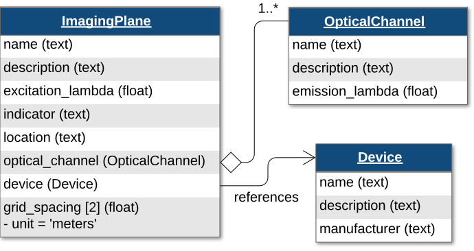
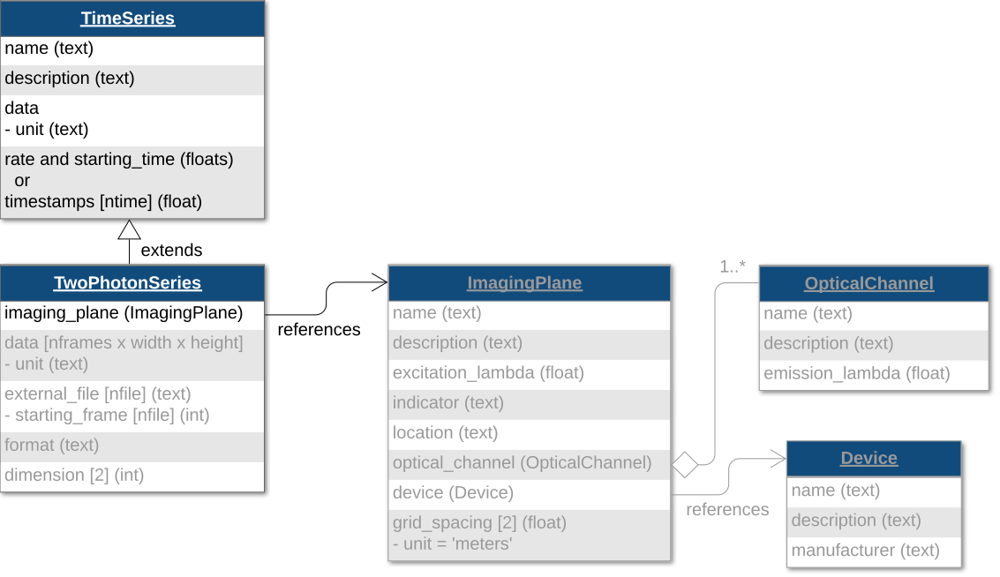
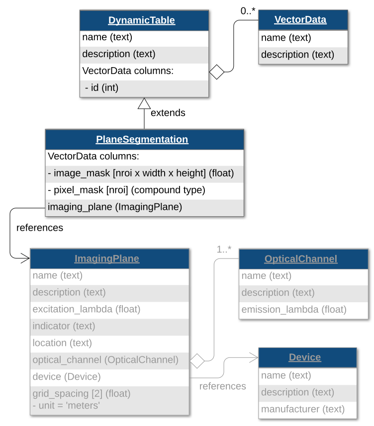
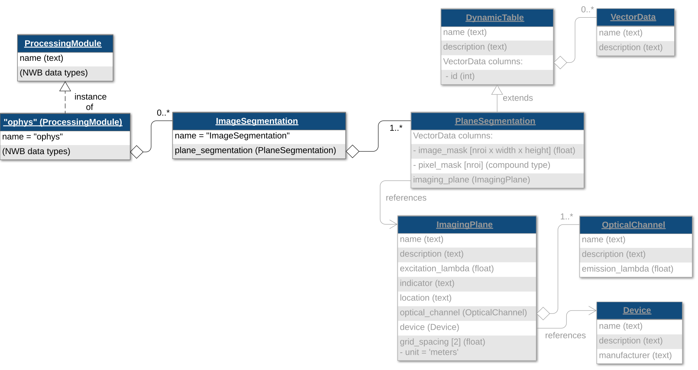
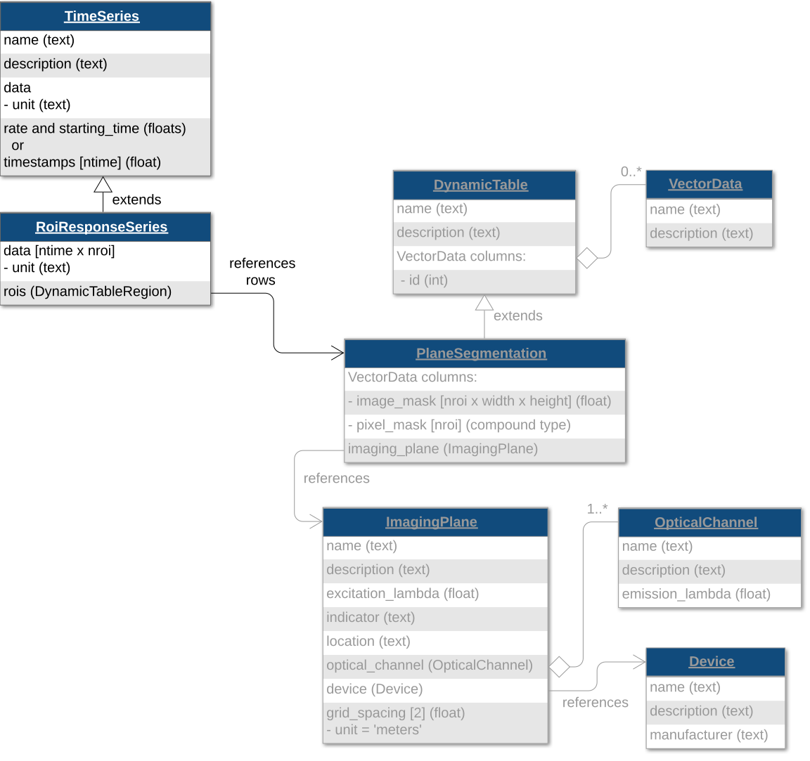
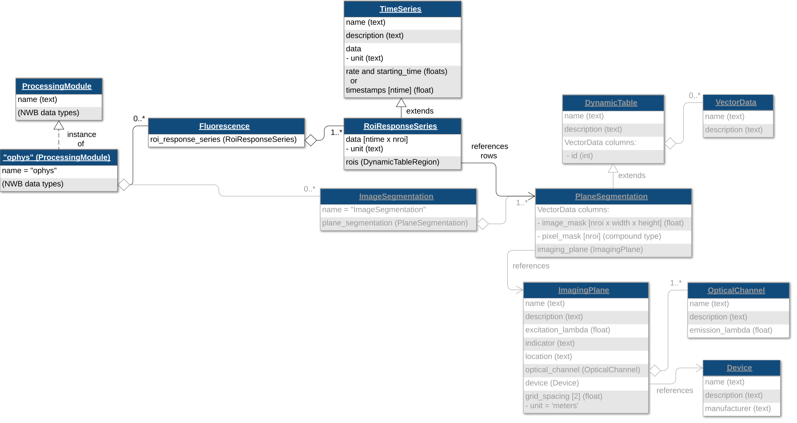

Note
Go to the end to download the full example code.
Calcium Imaging Data
This tutorial will demonstrate how to write calcium imaging data. The workflow demonstrated here involves five main steps:
Create imaging plane
Add acquired two-photon images
Add motion correction (optional)
Add image segmentation
Add fluorescence and dF/F responses
It is recommended to cover NWB File Basics before this tutorial.
Note
It is recommended to check if your source data is supported by NeuroConv Optical Physiology Gallery. If it is supported, it is recommended to use NeuroConv to convert your data.
The following examples will reference variables that may not be defined within the block they are used in. For clarity, we define them here:
from datetime import datetime
from uuid import uuid4
import matplotlib.pyplot as plt
import numpy as np
from dateutil.tz import tzlocal
from pynwb import NWBHDF5IO, NWBFile, TimeSeries
from pynwb.image import ImageSeries
from pynwb.ophys import (
CorrectedImageStack,
Fluorescence,
ImageSegmentation,
MotionCorrection,
OnePhotonSeries,
OpticalChannel,
RoiResponseSeries,
TwoPhotonSeries,
)
Creating the NWB file
When creating an NWB file, the first step is to create the NWBFile object.
nwbfile = NWBFile(
session_description="my first synthetic recording",
identifier=str(uuid4()),
session_start_time=datetime.now(tzlocal()),
experimenter=[
"Baggins, Bilbo",
],
lab="Bag End Laboratory",
institution="University of Middle Earth at the Shire",
experiment_description="I went on an adventure to reclaim vast treasures.",
keywords=["ecephys", "exploration", "wanderlust"],
related_publications="doi:10.1016/j.neuron.2016.12.011",
)
Imaging Plane
First, we must create an ImagingPlane object, which will hold information about the area and
method used to collect the optical imaging data. This first requires creation of a Device
object for the microscope and an OpticalChannel object.
{kind=link}

Create a Device named "Thorlabs Bergamo II" in the
NWBFile object. The fields
description, serial_number, and model are optional, but recommended. The
DeviceModel object stores information about the device model, which can be useful
when searching a set of NWB files or a data archive for all files that use a specific device model
(e.g., specific microscope model).
Then create an OpticalChannel named "OpticalChannel".
device_model = nwbfile.create_device_model(
name="Thorlabs Bergamo II Model",
description="Two-photon microscope for in vivo imaging",
manufacturer="Thorlabs",
model_number="Bergamo II",
)
device = nwbfile.create_device(
name="Thorlabs Bergamo II",
description="Two-photon microscope for in vivo imaging",
model=device_model,
serial_number="SN-123456789",
)
optical_channel = OpticalChannel(
name="OpticalChannel",
description="an optical channel",
emission_lambda=500.0,
)
Now, create a ImagingPlane named "ImagingPlane", passing in the
OpticalChannel object and the Device object.
imaging_plane = nwbfile.create_imaging_plane(
name="ImagingPlane",
optical_channel=optical_channel,
imaging_rate=30.0,
description="a very interesting part of the brain",
device=device,
excitation_lambda=600.0,
indicator="GFP",
location="V1",
grid_spacing=[0.01, 0.01],
grid_spacing_unit="meters",
origin_coords=[1.0, 2.0, 3.0],
origin_coords_unit="meters",
)
One-photon Series
Now that we have our ImagingPlane, we can create a
OnePhotonSeries object to store raw one-photon imaging data.
# the image data will be stored inside the NWB file
one_p_series = OnePhotonSeries(
name="OnePhotonSeries",
description="Raw 1p data",
data=np.ones((1000, 100, 100)),
imaging_plane=imaging_plane,
rate=1.0,
unit="normalized amplitude",
)
Since these one-photon data are acquired data, we will add the
OnePhotonSeries objects to the NWBFile
as acquired data.
nwbfile.add_acquisition(one_p_series)
Two-photon Series
TwoPhotonSeries objects store acquired two-photon imaging
data. This class behaves similarly to OnePhotonSeries.
{kind=link}

# the image data will be stored inside the NWB file
two_p_series = TwoPhotonSeries(
name="TwoPhotonSeries",
description="Raw 2p data",
data=np.ones((1000, 100, 100)),
imaging_plane=imaging_plane,
rate=1.0,
unit="normalized amplitude",
)
nwbfile.add_acquisition(two_p_series)
Motion Correction (optional)
You can also store the result of motion correction using a MotionCorrection object,
which is a MultiContainerInterface (similar to Position)
which holds 1 or more CorrectedImageStack objects.
corrected = ImageSeries(
name="corrected", # this must be named "corrected"
description="A motion corrected image stack",
data=np.ones((1000, 100, 100)),
unit="na",
format="raw",
starting_time=0.0,
rate=1.0,
)
xy_translation = TimeSeries(
name="xy_translation",
description="x,y translation in pixels",
data=np.ones((1000, 2)),
unit="pixels",
starting_time=0.0,
rate=1.0,
)
corrected_image_stack = CorrectedImageStack(
corrected=corrected,
original=one_p_series,
xy_translation=xy_translation,
)
motion_correction = MotionCorrection(corrected_image_stacks=[corrected_image_stack])
We will create a ProcessingModule named “ophys” to store optical
physiology data and add the motion correction data to the NWBFile.
ophys_module = nwbfile.create_processing_module(
name="ophys", description="optical physiology processed data"
)
ophys_module.add(motion_correction)
Plane Segmentation
The PlaneSegmentation class stores the detected
regions of interest in the TwoPhotonSeries data.
PlaneSegmentation is a subclass of
DynamicTable, where each row represents a
single region of interest (ROI).
{kind=link}

The ImageSegmentation class can contain multiple
PlaneSegmentation tables, so that we can store results
of different segmentation algorithms or different segmentation classes.
{kind=link}

First, we create an ImageSegmentation object, then
from that object we create a PlaneSegmentation table
with a link to the ImagingPlane created earlier.
Then we will add the ImageSegmentation object
to the previously created ProcessingModule.
img_seg = ImageSegmentation()
ps = img_seg.create_plane_segmentation(
name="PlaneSegmentation",
description="output from segmenting my favorite imaging plane",
imaging_plane=imaging_plane,
reference_images=one_p_series, # optional
)
ophys_module.add(img_seg)
Regions Of Interest (ROIs)
Image masks
You can add ROIs to the PlaneSegmentation table using
an image mask or a pixel mask. An image mask is an array that is the same size
as a single frame of the TwoPhotonSeries that
indicates the mask weight of each pixel in the image. Image mask values (weights) may
be boolean or continuous between 0 and 1.
for _ in range(30):
image_mask = np.zeros((100, 100))
# randomly generate example image masks
x = np.random.randint(0, 95)
y = np.random.randint(0, 95)
image_mask[x:x + 5, y:y + 5] = 1
# add image mask to plane segmentation
ps.add_roi(image_mask=image_mask)
# show one of the image masks
plt.imshow(image_mask)
Pixel masks
Alternatively, you could define ROIs using a pixel mask, which is an array of triplets (x, y, weight) that have a non-zero weight. All undefined pixels are assumed to be 0.
ps2 = img_seg.create_plane_segmentation(
name="PlaneSegmentation2",
description="output from segmenting my favorite imaging plane",
imaging_plane=imaging_plane,
reference_images=one_p_series, # optional
)
for _ in range(30):
# randomly generate example starting points for region
x = np.random.randint(0, 95)
y = np.random.randint(0, 95)
# define an example 4 x 3 region of pixels of weight '1'
pixel_mask = []
for ix in range(x, x + 4):
for iy in range(y, y + 3):
pixel_mask.append((ix, iy, 1))
# add pixel mask to plane segmentation
ps2.add_roi(pixel_mask=pixel_mask)
Voxel masks
When storing the segmentation of volumetric imaging, you can use 3D imaging masks. Alternatively, you could define ROIs using a voxel mask, which is an array of triplets (x, y, z, weight) that have a non-zero weight. All undefined voxels are assumed to be 0.
Note
You need to be consistent within a PlaneSegmentation table.
You can add ROIs either using image masks, pixel masks, or voxel masks.
ps3 = img_seg.create_plane_segmentation(
name="PlaneSegmentation3",
description="output from segmenting my favorite imaging plane",
imaging_plane=imaging_plane,
reference_images=one_p_series, # optional
)
from itertools import product
for _ in range(30):
# randomly generate example starting points for region
x = np.random.randint(0, 95)
y = np.random.randint(0, 95)
z = np.random.randint(0, 15)
# define an example 4 x 3 x 2 voxel region of weight '0.5'
voxel_mask = []
for ix, iy, iz in product(
range(x, x + 4),
range(y, y + 3),
range(z, z + 2)
):
voxel_mask.append((ix, iy, iz, 0.5))
# add voxel mask to plane segmentation
ps3.add_roi(voxel_mask=voxel_mask)
We can view the PlaneSegmentation table with pixel masks in
tabular form by converting it to a DataFrame.
ps2.to_dataframe()
Storing Fluorescence Measurements
Now that the regions of interest are stored, you can store fluorescence data for these
ROIs. This type of data is stored using the RoiResponseSeries
classes.
{kind=link}

To create a RoiResponseSeries object, we will need to reference
a set of rows from a PlaneSegmentation table to
indicate which ROIs correspond to which rows of your recorded data matrix.
This is done using a DynamicTableRegion, which is a type of link that
allows you to reference specific rows of a DynamicTable,
such as a PlaneSegmentation table by row indices.
First, we create a DynamicTableRegion that references
the first two ROIs of the PlaneSegmentation table.
rt_region = ps.create_roi_table_region(
region=[0, 1], description="the first of two ROIs"
)
Then we create a RoiResponseSeries object to store fluorescence
data for those two ROIs.
roi_resp_series = RoiResponseSeries(
name="RoiResponseSeries",
description="Fluorescence responses for two ROIs",
data=np.ones((50, 2)), # 50 samples, 2 ROIs
rois=rt_region,
unit="lumens",
rate=30.0,
)
To help data analysis and visualization tools know that this
RoiResponseSeries object represents fluorescence data,
we will store the RoiResponseSeries object inside
of a Fluorescence object.
Then add the Fluorescence object into the
same ProcessingModule named "ophys" that we created earlier.
{kind=link}

fl = Fluorescence(roi_response_series=roi_resp_series)
ophys_module.add(fl)
Tip
If you want to store dF/F data instead of fluorescence data, then store
the RoiResponseSeries object in a
DfOverF object, which works the same way as the
Fluorescence class.
Write the file
Once we have finished adding all of our data to our
NWBFile, make sure to write the file.
IO operations are carried out using NWBHDF5IO.
with NWBHDF5IO("ophys_tutorial.nwb", "w") as io:
io.write(nwbfile)
Read the NWBFile
We can access the raw data by indexing nwbfile.acquisition with a name
of the TwoPhotonSeries, e.g., "TwoPhotonSeries1".
We can also access the fluorescence responses by indexing nwbfile.processing
with the name of the processing module, "ophys".
Then, we can access the Fluorescence object inside
of the "ophys" processing module by indexing it with the name of the
Fluorescence object. The default name of
Fluorescence objects is "Fluorescence".
Finally, we can access the RoiResponseSeries object
inside the Fluorescence object by indexing it
with the name of the RoiResponseSeries object,
which we named "RoiResponseSeries".
with NWBHDF5IO("ophys_tutorial.nwb", "r") as io:
read_nwbfile = io.read()
print(read_nwbfile.acquisition["TwoPhotonSeries"])
print(read_nwbfile.processing["ophys"])
print(read_nwbfile.processing["ophys"]["Fluorescence"])
print(read_nwbfile.processing["ophys"]["Fluorescence"]["RoiResponseSeries"])
Accessing your data
Data arrays are read passively from the file.
Calling the data attribute on a TimeSeries
such as a RoiResponseSeries does not read the data
values, but presents an h5py object that can be indexed to read data.
You can use the [:] operator to read the entire data array into memory.
Load and print all the data values of the RoiResponseSeries
object representing the fluorescence data.
with NWBHDF5IO("ophys_tutorial.nwb", "r") as io:
read_nwbfile = io.read()
print(read_nwbfile.acquisition["TwoPhotonSeries"])
print(read_nwbfile.processing["ophys"]["Fluorescence"]["RoiResponseSeries"].data[:])
Accessing data regions
It is often preferable to read only a portion of the data. To do this, index
or slice into the data attribute just like if you were indexing or slicing a
numpy array.
The following code prints elements 0:10 in the first dimension (time)
and 0:3 (ROIs) in the second dimension from the fluorescence data we have written.
with NWBHDF5IO("ophys_tutorial.nwb", "r") as io:
read_nwbfile = io.read()
roi_resp_series = read_nwbfile.processing["ophys"]["Fluorescence"][
"RoiResponseSeries"
]
print("section of fluorescence responses:")
print(roi_resp_series.data[0:10, 0:3])